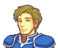

Support Rank C

・・・ぐー・・・

・・・・・・
んあ？
あれ ノア
いたのか・・・
ああ さっきからな
まあ おれは慣れてるから
べつに寝ててかまわないけどな
しかし お前・・・
他にやることないのか？
他に？
ああ たとえば
行軍中に訓練してみるとか・・・
うーん・・・ノア
お前は何やってる？
おれは・・・
これといって何も
・・・お前とあんまり
変わりないか
お前 イリアで休か中
何してた？
寝てた
それ以外に
んー・・・つりかなあ
冬に 氷のはった湖まで
出かけて・・・
やりで あな開けて
糸をたらすんだ
なんとなく お前らしいな
何がつれる？
いや なんにも
ただ 糸たらしてぼーっとしてるのが
いいんだよなあ
・・・のんきな奴だな
お前は
お前は何してた？
・・・・・・
・・・これといって何も
Support Rank B
トレック
そういえば あいつ覚えてるか？
カシスのやつ
んー？
そんな奴いたような・・・
いなかったような・・・
いたんだよ
おぼえてないか？
初めての任務で武器を忘れて・・・
ああ いたいた！
居眠りしてたおれと一緒に
ゼロット将軍に怒られてたっけ
あいつ馬まで忘れてて
結局 走って戦ってた
あん時は おれよりまぬけな奴も
いるもんだなあと思ってたなあ
あいつ 死んだらしい
ベルンに雇われてて・・・
この近くの戦場でな
・・・そうかぁ
この戦争で・・・
傭兵は 引く手あまただからな
ちょっと間違ったら・・・
あいつ おれたちと戦ってたかもな
んー・・・
まあ おれたちは
雇われだからなあ・・・
まあ そういうこともあるさ
まあな・・・
お前はいいな
そういう性格で・・・
Support Rank A
・・・・・・
んー？ ノア
どうかしたか
いや・・・
ちょっと 考えてた
考え事？
やめとけって
おれたちはそうやって悩むの
向いてないんだからさ
・・・まあな
今までの戦い・・・
別に世界を救ってやろうとか
考えてたわけじゃないが・・・
ここまで おれたち・・・
それなりに戦ってきた
そうだなぁ
けど イリアは相変わらず
今のままだ
おれたちの子供も その子供も・・・
戦争してすごすんだろう
おれたちができることは・・・
何もなかったのかな
どうだろうなぁ・・・
おれたちがどんなに苦労しても
結局 何も変わらないんじゃないかな・・・
ま いいんじゃないかなあ
それも
そうか・・・？
ああ おれは
そう思うよ
そりゃ つらいことだって
いろいろあるだろうけどさ・・・
それが生きてるって
ことじゃないかなあ
・・・かもな
なあ トレック
んー？
今度 おれも
つりに連れてってくれよ